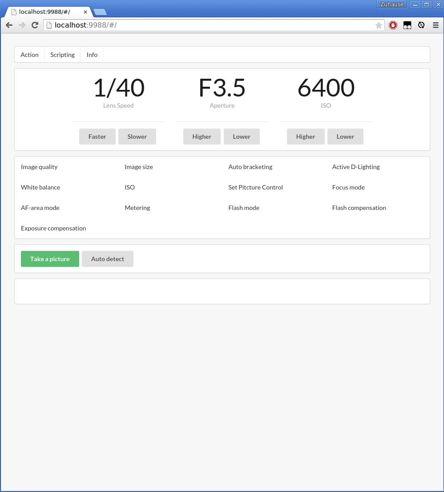

<!--
{
"title": "GPhoto im Web",
"date": "2015-02-26",
"tags": "camera prototype project web"
}
-->
<p>Ich kann jetzt GPhoto über eine Webseite steuern. Mit der Webseite wollte ich meine DSLR fernsteuern.</p>

